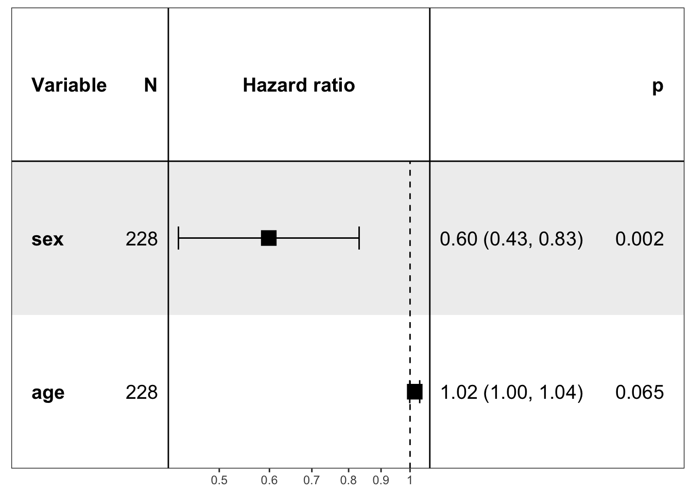
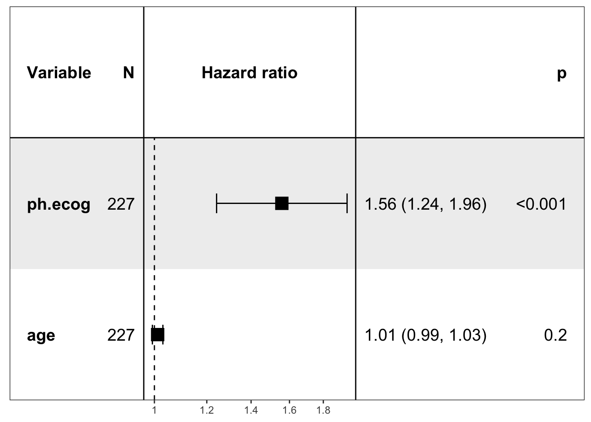

使用 ezcox 进行批量 Cox 模型处理
王诗翔 · 2019-10-23
分类:
r
标签:
r
cox
batch
forestplot
Cox 模型是我们做生存分析最常用的模型，在实际的分析工作中，我们常常想逐一查看多个变量对生存时间的影响。注意，这与多变量分析不同，后者是通常将多个变量纳入模型查看它们的影响。
基于我自己的分析需求，几个月前我编写了一个批处理的函数，最近我将它打包发布 CRAN 上。下面我们看一下如何使用它。
安装
使用下面的命令直接从 CRAN 上安装：
install.packages("ezcox")安装开发版本使用：
# install.packages("devtools")
devtools::install_github("ShixiangWang/ezcox")示例
我们使用 survival 包提供的数据集 lung 作为示例数据。
data("lung", package = "survival")
head(lung)
#> inst time status age sex ph.ecog ph.karno pat.karno meal.cal wt.loss
#> 1 3 306 2 74 1 1 90 100 1175 NA
#> 2 3 455 2 68 1 0 90 90 1225 15
#> 3 3 1010 1 56 1 0 90 90 NA 15
#> 4 5 210 2 57 1 1 90 60 1150 11
#> 5 1 883 2 60 1 0 100 90 NA 0
#> 6 12 1022 1 74 1 1 50 80 513 0加载包：
library(ezcox)
#> Welcome to 'ezcox' package!
#> =======================================================================
#> You are using ezcox version 0.7.0
#>
#> Github page : https://github.com/ShixiangWang/ezcox
#> Documentation: https://shixiangwang.github.io/ezcox/articles/ezcox.html
#>
#> Run citation("ezcox") to see how to cite 'ezcox'.
#> =======================================================================
#> 单变量批量处理
这里我们选择 3 个变量，包括年龄、性别以及 ECOG 评分。
res = ezcox(lung, covariates = c("age", "sex", "ph.ecog"))
#> => Processing variable age
#> ==> Building Surv object...
#> ==> Building Cox model...
#> ==> Done.
#> => Processing variable sex
#> ==> Building Surv object...
#> ==> Building Cox model...
#> ==> Done.
#> => Processing variable ph.ecog
#> ==> Building Surv object...
#> ==> Building Cox model...
#> ==> Done.
knitr::kable(res)| Variable | is_control | contrast_level | ref_level | n_contrast | n_ref | beta | HR | lower_95 | upper_95 | p.value | global.pval |
|---|---|---|---|---|---|---|---|---|---|---|---|
| age | FALSE | age | age | 228 | 228 | 0.019 | 1.020 | 1.000 | 1.040 | 0.042 | 0.040 |
| sex | FALSE | sex | sex | 228 | 228 | -0.531 | 0.588 | 0.424 | 0.816 | 0.001 | 0.001 |
| ph.ecog | FALSE | ph.ecog | ph.ecog | 227 | 227 | 0.476 | 1.610 | 1.290 | 2.010 | 0.000 | 0.000 |
结果以比较整洁的方式输出了 3 个 Cox 模型的系数、HR 以及它的置信区间、P值、样本量等。这里有一点需要提醒读者注意，当 contrast_level 和 ref_level一致时，Cox 模型其实是将该变量作为一个连续变量进行处理，所以我们也可以观察到它们的样本量一致。下面我们将 sex 改为分类变量看看结果是否有所不同。
table(lung$sex)
#>
#> 1 2
#> 138 90lung2 = lung
lung2$sex = factor(lung2$sex)
res = ezcox(lung2, covariates = c("age", "sex", "ph.ecog"))
#> => Processing variable age
#> ==> Building Surv object...
#> ==> Building Cox model...
#> ==> Done.
#> => Processing variable sex
#> ==> Building Surv object...
#> ==> Building Cox model...
#> ==> Done.
#> => Processing variable ph.ecog
#> ==> Building Surv object...
#> ==> Building Cox model...
#> ==> Done.
knitr::kable(res)| Variable | is_control | contrast_level | ref_level | n_contrast | n_ref | beta | HR | lower_95 | upper_95 | p.value | global.pval |
|---|---|---|---|---|---|---|---|---|---|---|---|
| age | FALSE | age | age | 228 | 228 | 0.019 | 1.020 | 1.000 | 1.040 | 0.042 | 0.040 |
| sex | FALSE | 2 | 1 | 90 | 138 | -0.531 | 0.588 | 0.424 | 0.816 | 0.001 | 0.001 |
| ph.ecog | FALSE | ph.ecog | ph.ecog | 227 | 227 | 0.476 | 1.610 | 1.290 | 2.010 | 0.000 | 0.000 |
结果证实如此。
多变量批量处理
我们将年龄作为新的变量加入，也就是运行 2 个二变量的 Cox 模型。
Surv ~ sex + age
Surv ~ ph.ecog + age实际操作如下：
res = ezcox(lung, covariates = c("sex", "ph.ecog"), controls = "age")
#> => Processing variable sex
#> ==> Building Surv object...
#> ==> Building Cox model...
#> ==> Done.
#> => Processing variable ph.ecog
#> ==> Building Surv object...
#> ==> Building Cox model...
#> ==> Done.
knitr::kable(res)| Variable | is_control | contrast_level | ref_level | n_contrast | n_ref | beta | HR | lower_95 | upper_95 | p.value | global.pval |
|---|---|---|---|---|---|---|---|---|---|---|---|
| sex | FALSE | sex | sex | 228 | 228 | -0.513 | 0.599 | 0.431 | 0.831 | 0.002 | 0.001 |
| sex | TRUE | age | age | 228 | 228 | 0.017 | 1.020 | 0.999 | 1.040 | 0.065 | 0.001 |
| ph.ecog | FALSE | ph.ecog | ph.ecog | 227 | 227 | 0.443 | 1.560 | 1.240 | 1.960 | 0.000 | 0.000 |
| ph.ecog | TRUE | age | age | 228 | 228 | 0.011 | 1.010 | 0.993 | 1.030 | 0.226 | 0.000 |
这里 global.pval 给出的是整个模型的P值。变量 age 并不是我们想要关注的结果，我们可以过滤它：
knitr::kable(dplyr::filter(res, ref_level != "age"))| Variable | is_control | contrast_level | ref_level | n_contrast | n_ref | beta | HR | lower_95 | upper_95 | p.value | global.pval |
|---|---|---|---|---|---|---|---|---|---|---|---|
| sex | FALSE | sex | sex | 228 | 228 | -0.513 | 0.599 | 0.431 | 0.831 | 0.002 | 0.001 |
| ph.ecog | FALSE | ph.ecog | ph.ecog | 227 | 227 | 0.443 | 1.560 | 1.240 | 1.960 | 0.000 | 0.000 |
如果你想要查看模型本身，这也没有问题。
res = ezcox(lung, covariates = c("sex", "ph.ecog"), controls = "age", return_models = TRUE)
#> => Processing variable sex
#> ==> Building Surv object...
#> ==> Building Cox model...
#> ==> Done.
#> => Processing variable ph.ecog
#> ==> Building Surv object...
#> ==> Building Cox model...
#> ==> Done.
res$models$model
#> [[1]]
#> Call:
#> coxph(formula = fm, data = data)
#>
#> coef exp(coef) se(coef) z p
#> sex -0.513 0.599 0.167 -3 0.002
#> age 0.017 1.017 0.009 2 0.065
#>
#> Likelihood ratio test=14 on 2 df, p=9e-04
#> n= 228, number of events= 165
#>
#> [[2]]
#> Call:
#> coxph(formula = fm, data = data)
#>
#> coef exp(coef) se(coef) z p
#> ph.ecog 0.443 1.558 0.116 4 1e-04
#> age 0.011 1.011 0.009 1 0.2
#>
#> Likelihood ratio test=19 on 2 df, p=7e-05
#> n= 227, number of events= 164
#> (1 observation deleted due to missingness)可视化
我之前想过创建相应的可视化函数，但批量处理的结果使用表格展示更加方便。如果有画图需求的读者可以使用 forestplot 包，甚至 ggplot2 去构建自定义的森林图或者其他图形。如果是单个 Cox 模型，我们可以直接使用 forestmodel 包提供的函数进行可视化。
library(forestmodel)
#> Loading required package: ggplot2
forest_model(res$models$model[[1]])
forest_model(res$models$model[[2]])